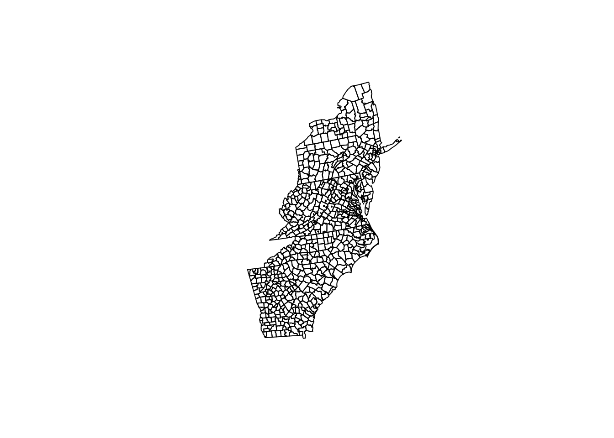
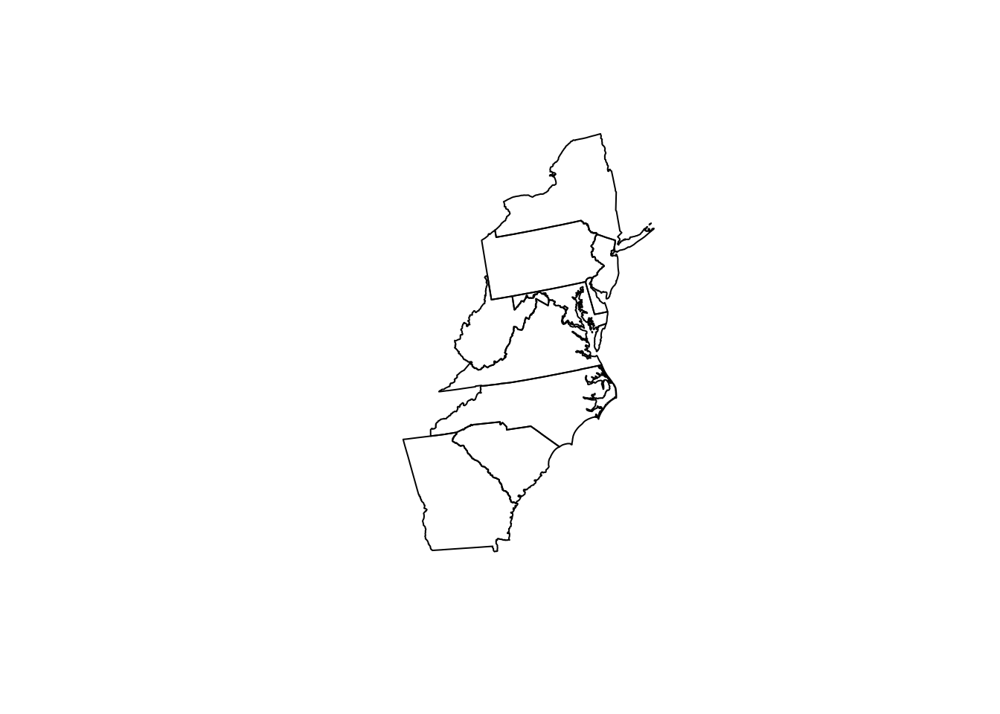
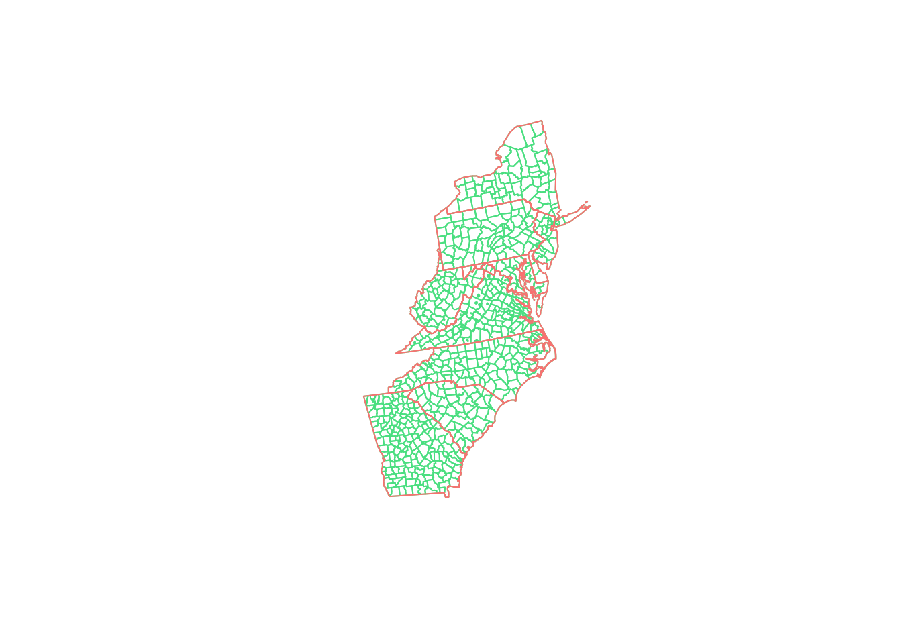
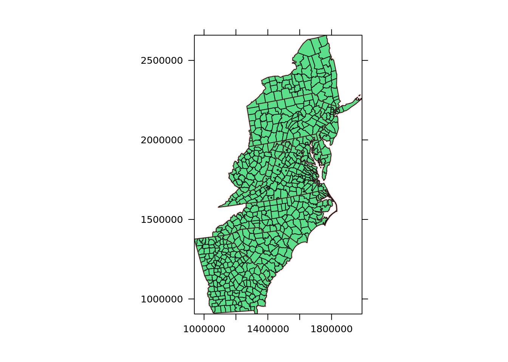

── Attaching packages ─────────────────────────────────────── tidyverse 1.3.2 ──
✔ ggplot2 3.3.6 ✔ purrr 0.3.4
✔ tibble 3.1.8 ✔ dplyr 1.1.0
✔ tidyr 1.2.0 ✔ stringr 1.4.1
✔ readr 2.1.2 ✔ forcats 0.5.2
── Conflicts ────────────────────────────────────────── tidyverse_conflicts() ──
✖ dplyr::filter() masks stats::filter()
✖ dplyr::lag() masks stats::lag()
Attaching package: 'raster'
The following object is masked from 'package:dplyr':
select
Attaching package: 'gridExtra'
The following object is masked from 'package:dplyr':
combine
Loading required package: ranger
Loading required package: caret
Loading required package: lattice
Attaching package: 'caret'
The following object is masked from 'package:purrr':
lift
Attaching package: 'plotly'
The following object is masked from 'package:raster':
select
The following object is masked from 'package:ggplot2':
last_plot
The following object is masked from 'package:stats':
filter
The following object is masked from 'package:graphics':
layout
Attaching package: 'vip'
The following object is masked from 'package:utils':
vi
Attaching package: 'pdp'
The following object is masked from 'package:purrr':
partialGlobal and Local Random Forest Regression
Library
讀入資料
county
county <- shapefile("./Data_GWR/COUNTY_ATLANTIC.shp")
county |> class()[1] "SpatialPolygonsDataFrame"
attr(,"package")
[1] "sp"county |> dim()[1] 666 12county |> head() ID FIPS x y REGION_ID DIVISION_I STATE_ID COUNTY_ID REGION
1 7873 13111 1056524 1376613 3 5 13 111 South
2 7874 42115 1653442 2267301 1 2 42 115 Northeast
3 7876 42075 1633708 2096683 1 2 42 75 Northeast
4 7877 51683 1584049 1901443 3 5 51 683 South
5 7879 36057 1735811 2409536 1 2 36 57 Northeast
6 7880 13149 1003647 1193902 3 5 13 149 South
DIVISION STATE COUNTY
1 South Atlantic Georgia Fannin County
2 Middle Atlantic Pennsylvania Susquehanna County
3 Middle Atlantic Pennsylvania Lebanon County
4 South Atlantic Virginia Manassas city
5 Middle Atlantic New York Montgomery County
6 South Atlantic Georgia Heard Countycounty@data$COUNTY |> unique() |> length()[1] 521county@data |>
filter(COUNTY == "York County") |>
select(DIVISION, STATE, COUNTY) DIVISION STATE COUNTY
1 Middle Atlantic Pennsylvania York County
2 South Atlantic South Carolina York County
3 South Atlantic Virginia York Countycounty |> plot()
state
state <- shapefile("./Data_GWR/STATE_ATLANTIC.shp")
state |> class()[1] "SpatialPolygonsDataFrame"
attr(,"package")
[1] "sp"state |> dim()[1] 11 9state |> head() ID ID2 REGION_ID DIVISION_I STATE_ID REGION DIVISION
1 8607 2 3 5 13 South South Atlantic
2 8608 3 1 2 34 Northeast Middle Atlantic
3 8609 4 1 2 36 Northeast Middle Atlantic
4 8610 5 1 2 42 Northeast Middle Atlantic
5 8611 6 3 5 45 South South Atlantic
6 8612 7 3 5 54 South South Atlantic
STATE STATE_AB
1 Georgia GA
2 New Jersey NJ
3 New York NY
4 Pennsylvania PA
5 South Carolina SC
6 West Virginia WVstate@data |> select(STATE) |> unique() |> pull() |> length()[1] 11plot(state)
plot(county, border = "#4ade80")
plot(state, border = "#f87171", add = TRUE)
spplot(
county,
zcol = "STATE_ID",
col.regions = c("#4ade80"),
colorkey = FALSE,
sp.layout = list(
state,
col = "#f87171",
lwd = 3,
fill = "#fef2f2",
alpha = .1,
first = FALSE
),
scales = list(draw = TRUE)
)
df <- readr::read_csv("./Data_GWR/data_all_1998_2012.csv")Rows: 9990 Columns: 10
── Column specification ────────────────────────────────────────────────────────
Delimiter: ","
dbl (10): FIPS, x, y, Year, Rate, POVERTY, SMOKING, PM25, NO2, SO2
ℹ Use `spec()` to retrieve the full column specification for this data.
ℹ Specify the column types or set `show_col_types = FALSE` to quiet this message.df |> str()spc_tbl_ [9,990 × 10] (S3: spec_tbl_df/tbl_df/tbl/data.frame)
$ FIPS : num [1:9990] 10001 10001 10001 10001 10001 ...
$ x : num [1:9990] 1737531 1737531 1737531 1737531 1737531 ...
$ y : num [1:9990] 1972073 1972073 1972073 1972073 1972073 ...
$ Year : num [1:9990] 2000 2010 2001 2004 2008 ...
$ Rate : num [1:9990] 77.3 69.7 79.1 75.6 71.9 ...
$ POVERTY: num [1:9990] 10.8 12.1 10.3 11.4 10.7 12.1 13.6 14.9 13.4 11.9 ...
$ SMOKING: num [1:9990] 27.5 24.1 26.8 26.4 24.4 27.7 24.7 25.2 24.4 27.8 ...
$ PM25 : num [1:9990] 15.2 10.5 15.2 14.4 10.6 ...
$ NO2 : num [1:9990] 4.61 2.51 5.09 3.38 2.78 ...
$ SO2 : num [1:9990] 0.0875 0.0231 0.0829 0.0876 0.0711 ...
- attr(*, "spec")=
.. cols(
.. FIPS = col_double(),
.. x = col_double(),
.. y = col_double(),
.. Year = col_double(),
.. Rate = col_double(),
.. POVERTY = col_double(),
.. SMOKING = col_double(),
.. PM25 = col_double(),
.. NO2 = col_double(),
.. SO2 = col_double()
.. )
- attr(*, "problems")=<externalptr> df |> head()# A tibble: 6 × 10
FIPS x y Year Rate POVERTY SMOKING PM25 NO2 SO2
<dbl> <dbl> <dbl> <dbl> <dbl> <dbl> <dbl> <dbl> <dbl> <dbl>
1 10001 1737531. 1972073. 2000 77.3 10.8 27.5 15.2 4.61 0.0875
2 10001 1737531. 1972073. 2010 69.7 12.1 24.1 10.5 2.51 0.0231
3 10001 1737531. 1972073. 2001 79.1 10.3 26.8 15.2 5.09 0.0829
4 10001 1737531. 1972073. 2004 75.6 11.4 26.4 14.4 3.38 0.0876
5 10001 1737531. 1972073. 2008 71.9 10.7 24.4 10.6 2.78 0.0711
6 10001 1737531. 1972073. 1999 79.7 12.1 27.7 14.6 4.64 0.0904train_df <- df |>
select(FIPS, x, y, Year, POVERTY, SMOKING, PM25, NO2, SO2, Rate) |>
filter(Year == 2010) |>
arrange(FIPS)
valid_df <- df |>
select(FIPS, x, y, Year, POVERTY, SMOKING, PM25, NO2, SO2, Rate) |>
filter(Year == 2011) |>
arrange(FIPS)
test_df <- df |>
select(FIPS, x, y, Year, POVERTY, SMOKING, PM25, NO2, SO2, Rate) |>
filter(Year == 2012) |>
arrange(FIPS)建模
train_df |> str()tibble [666 × 10] (S3: tbl_df/tbl/data.frame)
$ FIPS : num [1:666] 10001 10003 10005 11001 13001 ...
$ x : num [1:666] 1737531 1719078 1762733 1620146 1288991 ...
$ y : num [1:666] 1972073 2024828 1928789 1926596 1057013 ...
$ Year : num [1:666] 2010 2010 2010 2010 2010 2010 2010 2010 2010 2010 ...
$ POVERTY: num [1:666] 12.1 11.2 13.9 18.8 24.5 36.3 25.6 26 27 16.4 ...
$ SMOKING: num [1:666] 24.1 20.4 25.1 20.7 25.1 27.7 27.8 26.5 25 25.2 ...
$ PM25 : num [1:666] 10.49 10.78 10.21 10.37 9.54 ...
$ NO2 : num [1:666] 2.509 3.076 2.495 3.15 0.569 ...
$ SO2 : num [1:666] 0.02307 0.02399 0.02191 0.02877 0.00481 ...
$ Rate : num [1:666] 69.7 58.7 62.2 51.2 73.2 ...train_df |> head()# A tibble: 6 × 10
FIPS x y Year POVERTY SMOKING PM25 NO2 SO2 Rate
<dbl> <dbl> <dbl> <dbl> <dbl> <dbl> <dbl> <dbl> <dbl> <dbl>
1 10001 1737531. 1972073. 2010 12.1 24.1 10.5 2.51 0.0231 69.7
2 10003 1719078. 2024828. 2010 11.2 20.4 10.8 3.08 0.0240 58.7
3 10005 1762733. 1928789. 2010 13.9 25.1 10.2 2.50 0.0219 62.2
4 11001 1620146. 1926596. 2010 18.8 20.7 10.4 3.15 0.0288 51.2
5 13001 1288991. 1057013. 2010 24.5 25.1 9.54 0.569 0.00481 73.2
6 13003 1240687. 999296. 2010 36.3 27.7 9.28 0.424 0.00415 87.0response <- "Rate"
predictors <- c("POVERTY", "SMOKING", "PM25", "NO2", "SO2")
formula_str <- predictors |> paste(collapse = " + ") |> paste("~", ... = _)rf_model <- ranger::ranger(
as.formula(formula_str),
data = train_df,
num.trees = 500,
mtry = 5,
max.depth = 20,
replace = TRUE,
sample.fraction = 1,
oob.error = TRUE
)
rf_model_1 <- rf_model
rf_model |> class()[1] "ranger"# 打錯字
rf_model$prediction.error[1] 2.057507rf_model$prediction.error |> sqrt()[1] 1.434401rf_model$r.squared[1] 0.974726pred_valid <- predict(rf_model, data = valid_df[, predictors])
temp <- valid_df[, response] - pred_valid$predictions
temp ** 2 |> pull() |> mean() |> sqrt()[1] 15.93902temp |> abs() |> pull() |> mean()[1] 13.40006lm(valid_df$Rate ~ pred_valid$predictions) |>
summary() |>
{\(x) x$r.squared}()[1] 0.3687971train_df |>
dim()[1] 666 10超參數訓練
hyper_grid <- expand.grid(
num.trees = seq(100, 5000, by = 10),
max.depth = seq(10, 50, by = 10),
sample.fraction = seq(.7, 1, by = .1)
)
hyper_grid |> dim()[1] 9820 3hyper_grid <- hyper_grid |>
mutate(
oob.RMSE = 0,
oob.R2 = 0,
valid.RMSE = 0,
valid.MAE = 0,
valid.R2 = 0
)time_started <- proc.time()
for (i in 1:nrow(hyper_grid))
{
num_trees <- hyper_grid[i, 'num.trees']
max_depth <- hyper_grid[i, 'max.depth']
sample_fraction <- hyper_grid[i, 'sample.fraction']
rf_model <- ranger::ranger(
as.formula(formula_str),
data = train_df,
num.trees = num_trees,
max.depth = max_depth,
sample.fraction = sample_fraction
)
hyper_grid[i, 'oob.RMSE'] <- rf_model$prediction.error
hyper_grid[i, 'oob.R2'] <- rf_model$r.squared
pred_valid <- predict(rf_model, data = valid_df[, predictors])
temp <- valid_df[, response] - pred_valid$predictions
hyper_grid[i, 'valid.RMSE'] <- temp ** 2 |> pull() |> mean() |> sqrt()
hyper_grid[i, 'valid.MAE'] <- temp |> abs() |> pull() |> mean()
hyper_grid[i, 'valid.R2'] <- lm(valid_df$Rate ~ pred_valid$predictions) |>
summary() |>
{\(x) x$r.squared}()
}
time_finished <- proc.time()
time_finished - time_started
saveRDS(hyper_grid, "./Data_GWR/hypergrid.RDS")